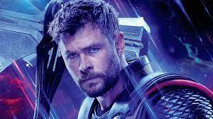

Кріс Ге́мсворт (англ. Chris Hemsworth; нар. 11 серпня 1983, Мельбурн, Вікторія, Австралія) — австралійський актор, номінант на премію BAFTA (2012). Здобув широку популярність після контракту з Marvel Studios на фільми Кіновсесвіту Marvel, у яких знімається від 2011 року.
Народився 11 серпня 1983 року в Мельбурні у сім'ї вчительки і працівника соціальної служби. Коли він був дитиною, його родина часто переїжджала, поки остаточно не осіла на острові Філіпа. З дитинства обожнював спорт, зокрема, серфінг. Вчився в коледжі Гітмонда в Мельбурні.
В основному фільмувався у телевізійних серіалах. Дебютував у кіно в серіалі «Гвен Джонс — учениця Мерліна» (2002). Відомий роллю в серіалі «Додому і в дорогу» (2004—2007).
Одружений з іспанською актрисою Ельзою Патакі, з якою у шлюбі має троє дітей.
У 2014 році Кріс Хемсворт став найсексуальнішим чоловіком за версією журналу People.
Тор (англ. Thor) — супергерой коміксів видавництва Marvel Comics. Персонаж створений на образі однойменного бога з германо-скандинавської міфології. Його творці в Marvel — редактор Стен Лі, сценарист Ларрі Лібер і художник Джек Кірбі, перша згадка про нього — в коміксі Journey into Mystery #83 (1962), який пізніше перейменували на «The Mighty Thor».
Батько Тора, Одін вирішує, що його сина треба навчати смиренності та ставить Тора в тіло студента-медика Дональда Блейка. Ставши лікарем, Блейк є свідком приходу чужорідної скаутської партії, коли він перебуває у відпустці в Норвегії. Блейк втікає від інопланетян у печеру. Знайшовши молот Тора Мйольнір (замаскований під льодову палицю) і вдаривши його по скелі, він перетворюється на бога грому. Пізніше, у Thor # 159, Блейк дізнався, що завжди був Тором, чари Одіна, змусили його забути себе, і повірити, що він смертний. Перемагаючи інопланетян, Тор розділяє подвійне життя з його альтер-его: лікування хворих з медсестрою — і кінцевою любов'ю — Джейн Фостер, і захист людства від зла. Присутність Тора на Землі майже відразу привертає увагу свого зведеного брата і ворога Локі. Локі відповідає за виникнення трьох головних ворогів Тора: Поглинача, Руйнівника, і Шкідника. Одного разу, тактика Локі була випадково корисною — хоча вона успішно використовувала ілюзію Галка, щоб залучити Тора до бою, це призводить до формування супергероїв команди «Месники», членом якої є Тор. До інших ранніх ворогів Тора належать Зарко, Людина Завтра, Радіоактивна людина, Лавова людина, Кобра, Містер Гайд, Чарівниця і Кат, і Сірий горгуль.
Закохавшись у Джейн Фостер, Тор не послухався свого батька і відмовився повернутися до Асґарду, акт, за який його кілька разів покарали. Натуральна спорідненість Тора до Землі в кінцевому підсумку виявляється через те, що він був сином Старійшини Богині Геї. Хоча Тор спочатку вважає себе «супергероєм», як і його товариші по команді в «Месниках», махінації Локі приваблюють Тора до все більш епічних пригод, таких як об'єднання з батьком Одіном і союзником асґардійцем Бальдером проти вогняного демона Суртура і Скагга Штормового Гіганта. Тор стикається з грецьким Богом Геркулесом, який стає вірним і надійним другом. Тор рятує Геркулеса від інших олімпійських Плуто, зупиняє просування Его Живої Планети, рятує Джейн Фостер від Високого Еволюціонера і перемагає його недосконале творіння, Людина-Звір. Одін нарешті вгамовує і дозволяє Тору полюбити Джейн Фостер, за умови, що вона пройде судовий розгляд. Фостер панікує і Тор втручається. Після того, як Фостер не пройшла тест, Одін повертає її на Землю, де їй дають ще один шанс на любов/ Тор вперше бореться з аґлярдським тролем Уликом, коли Улик намагається вкрасти Мйольнір. Бог грому повертається до Асґарда, щоб не допустити Манґоґа від малювання Одінслова і закінчення всесвіту, Тор дізнається походження Ґалактуса і рятує Сіф після того, як вона була викрадена Адамом Ворлоком.